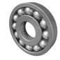

01.01
SKF • FAG • ZKL

Valivá, kuličková a soudečková ložiska
Kompletní sortiment kuličkových, válečkových, soudečkových, jehlových a kuželíkových ložisek renomovaných světových značek.
Kuličková • Válečková • Soudečková • Kuželíková • Nadrozměrná